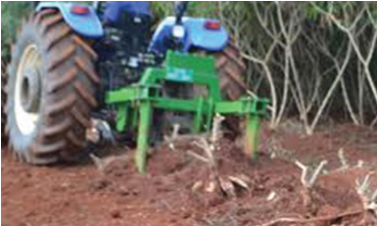
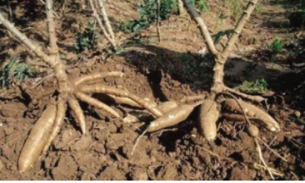

Exercise 3.3
1. What factors should be considered when recommending the application of
fertilisers in cassava fields?
2. Find out other cassava diseases apart from CMD and CBSD.
3. Can cassava be intercropped with other crops? Explain.
Harvesting in cassava
Harvesting cassava can be done mechanically using cassava harvesting machines
or manually using hand tools like a hoe, spade, and folk. In Tanzania, cassava
roots are usually harvested by hand. This process is easier when the soil is moist.
The following are steps to be followed when harvesting cassava manually;
(i) Cut the upper parts of the stems leaving about 30-50 cm height;
(ii) Use a hoe, spade, or fork to loosen the soil;
(iii) Pull out the roots by hand (Figure 3.12 (a));
(iv) Remove soil and any remaining dirt from the roots. Avoid washing them,
as moisture can cause spoilage;
(v) Check the base of the cassava for any broken-off roots and dig for them
out of the soil; and,
(vi) Use a clean sharp knife to trim the root tubers from the stems.
Cassava harvesting can be semi-mechanised or fully mechanised and involves
several steps, including loosening the roots, pulling up the crops, removing the
soil, and separating the roots (Figure 3.12 (b)). The roots are then collected and
loaded for transportation.


(a) (b)
Figure 3.12: Harvesting in cassava; (a) manually pulled-off the ground (b) mechanised
harvesting